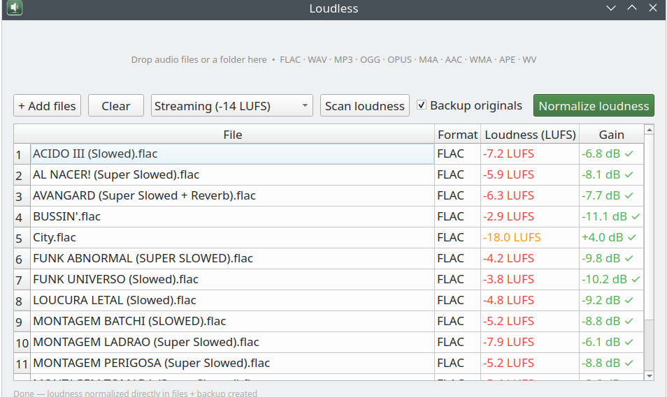
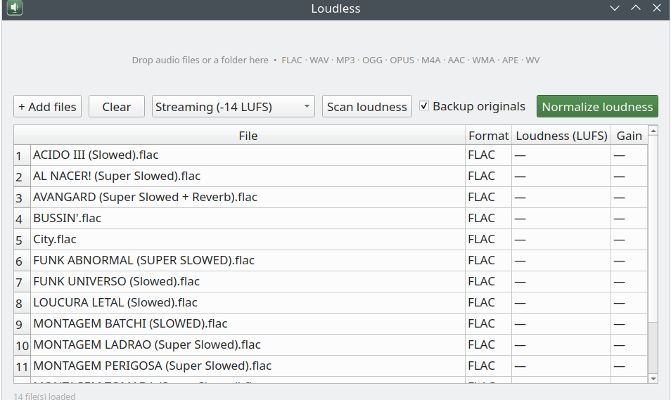
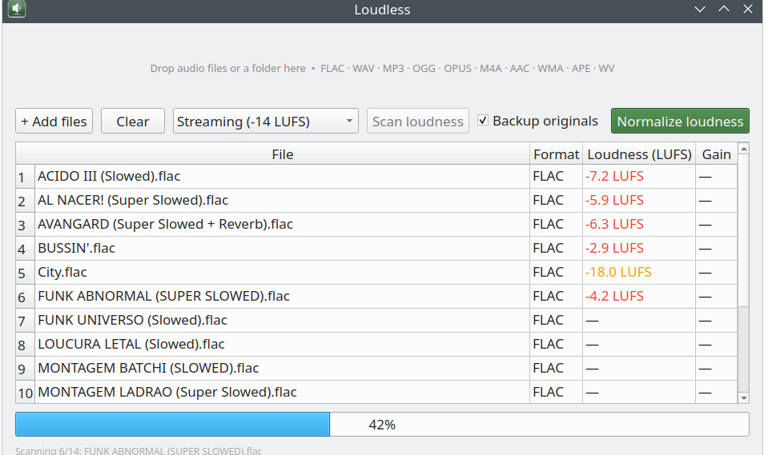
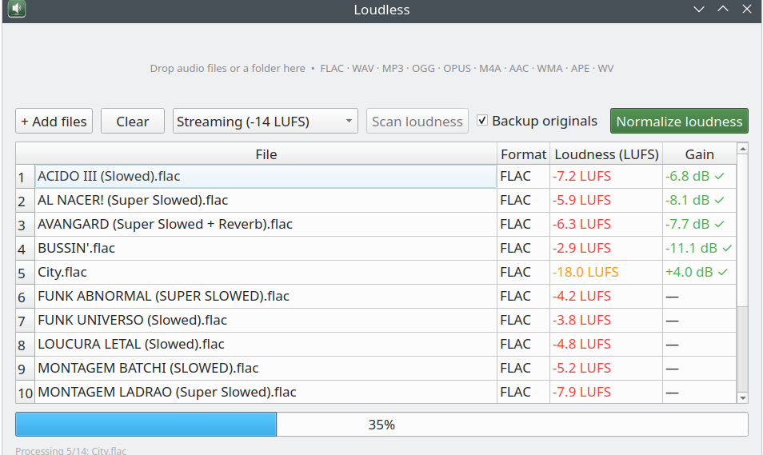

Normalize audio loudness directly in your files — no tags, no player config, every player gets it right.

Measures and applies gain using industry-standard LUFS metering. Three targets: Streaming (−14), ReplayGain (−18), Broadcast (−23).
FLAC, WAV, AIFF, APE and WavPack are re-encoded without any quality loss. Lossy formats are re-encoded at highest quality.
Drop files or entire folders. Loudless processes everything recursively and shows loudness per file before you commit.
Originals are copied to a "Loudless Backup" subfolder before any changes are made. One checkbox, always on by default.
Unlike ReplayGain tags, the gain is written directly into the audio data — every player, every device, correct volume.
Built with PyQt6, runs natively on any Linux desktop. Available as a Flatpak with no system dependencies needed.
Lossless — re-encoded without quality loss
Lossy — re-encoded at highest quality
flatpak remote-add --if-not-exists loudless https://daniel-v8.github.io/Loudless/repo
flatpak install loudless io.github.Daniel_v8.Loudless
flatpak run io.github.Daniel_v8.Loudless
Requires Flatpak installed on your system. Works on Fedora, Ubuntu, Arch and any Linux distro.


